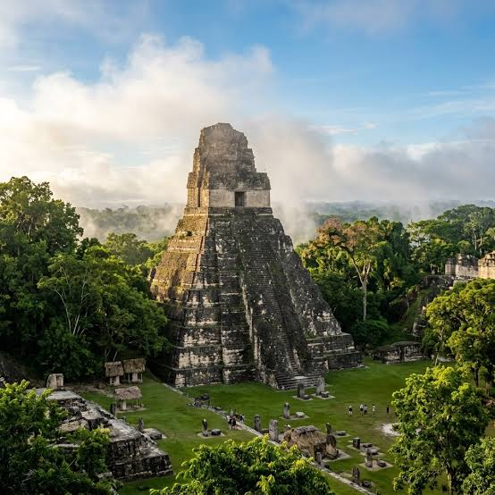

Parque Nacional Tikal
Tikal es uno de los sitios arqueologicos más importantes de la civilización maya. Sus templos y piramides estan ubicados en medio de la selva del Petén y son patrimonio de la humanidad. Es un destino turístico que combina historia, cultura y naturaleza, atrayendo a visitantes de todo el mundo.
